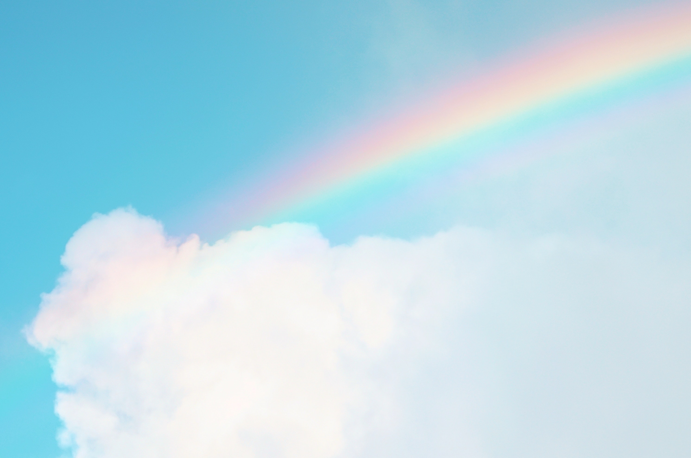

Hello.everyone.
My name is Natuki Iha
There is only one way
to be happy.
Living as if it were the
last day of
life every day.
I want to live
freely like a cat.
lynx canadensis.
American North Canada
long legs for deep hair
covered feet in deep snow
waik around is suitable
sometimes I want to have a pet.
Cat Love
Scottish Fold
Scotland is born
mutation individual bent ear
My view of the world
innocently alive
I love one's own world have got
Scottish Fold.


Norwegian Forest Cat

Born in Norway
in the harsh cold of Norway
but to live thick coat
have big body developed into.
very intelligent and playful with
it also appears in mythology.
Noble cat.
I want to be so too.